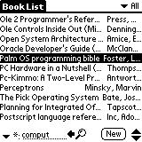
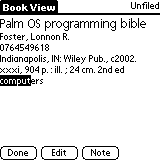
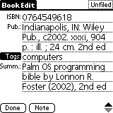
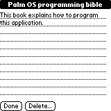

Palm OS offline LibraryThing database application
Version 1.0.3. MMcM 10/06
Summary
After one too many charity book sales where I wasn't able to answer whether we
already have a book and/or it's on the wish list, I decided we needed
to make better use of having put everything into LibraryThing. Not
having a cell phone and being disinclined to pay data charges for one
to access LT Mobile, I thought that this would be a good use for an
older PDA. These can be bought on eBay for around the retail price of
a hardcover book and turn up for even less at yard sales.
Most of the use cases revolve around being at a bookstore or library
and wanting to check what's there with what you have / want. All the
hard work is left to the LT site. The handheld database is almost,
but not quite read-only. The exception is noting down a new book to
be added to the wish list or investigated further.
Requirements
Any Palm device running (or upgradeable to) Palm OS 3.0 or newer
should work. Data storage requires a couple hundred bytes per book,
so a low-end 2MB model should hold a library with a few thousand
books.
A Desktop PC running a reasonably modern version of Microsoft Windows
is needed for getting data onto the handheld. (Windows 2000 is
probably good enough.)
Getting started
Microsoft Windows
-
Install whatever software came with the Palm (or download from
here)
and make sure that HotSync works.
-
Download the self-extracting installer from
here.
-
Run the installer.
-
You will be asked for a location of the LibraryThing tab-delimited
export file on your PC. If you regularly download this for backup
(and you should), enter that file's location. If you leave the
default without a directory, it will look for the file in with the
other Palm Desktop files. More of this
later.
-
You will be prompted to install PalmThing on any devices already known to the
HotSync Manager. If you choose not to do this as part of the installation,
you will have another chance later.
-
If for some reason you prefer not to use HotSync, you can copy the
application and database to the device manually using the Palm install
program. To get the necessary database file, follow the instructions
below for Linux, substituting
ltimport.cmd for ltimport.sh.
-
If you did not install the application as part of the program installation
process, run the Install PalmThing application from the Start Menu and pick
the target device(s).
-
Run HotSync to copy the application to the handheld.
-
On the Palm, launch PalmThing and make sure that it comes up. If it
isn't there, check the HotSync Log and see if it tried. If the device
freezes, you've probably found an incompatibility; reset the device
and let me know.
-
Launch the application on the Palm and hopefully see your library.
Linux
-
Get the basic ability to transfer files to the Palm working.
A popular open source program for doing this is
pilot-link.
There are GUI wrappers for it, such as J-Pilot and Gnome-Pilot.
Palm has a KB article with more links.
-
You will also need a working Java Runtime, which is standard in most modern distros.
-
Download and untar the compressed archive from
here.
-
Download the LibraryThing
tab-delimited export if you have not done so recently.
-
ltimport.sh -read LibraryThing_TD.xls -sort 5 -dump PalmThing-Books.pdb
-
pilot-xfer --install PalmThing.prc PalmThing-Books.pdb
or its GUI equivalent in your preferred tool.
User Interface
Book List
-
Lists books in your library.
-
Click on a book to view its details.
-
You can control how a book is listed from Options > Preferences....
-
The lower-left gives a filter for books that are displayed.
-
The pop-up list chooses the field(s) to filter: Title, Author, ISBN, Tags, Comments,
Summary or all of them.
-
The left-pointing arrow clears the filter field and focuses it. This
is the quickest way to start a new filter.
-
The magnifying glass applies the filter manually if you do not have
Incremental Find turned on.
-
New to enter a new book.
-
Scroll through the list with the up and down arrows, if you device
does not have hardware buttons for that.
|
 |
Book View
-
Displays the chosen book.
-
The filter term is highlighted.
-
Done to return to the list.
-
Edit to edit the book record.
-
Note to display / edit a note on the book.
|
 |
Book Edit
-
Edits the chosen book.
-
Done to return to View.
-
Note to display / edit a note on the book.
A note is presently the same as the LT Comments field.
|
 |
Note Edit
-
Edits a note for the current book.
-
A note is presently the same as the LT Comments field.
|
 |
Categories and Tags
Most fields are the same on the Palm and on the LibraryThing site.
Comments is called Note, but is otherwise the same.
Tags are somewhat special. Tags in LibraryThing map to both the
category on the Palm and the tags field in the Palm record. A
collection tag is a tag that starts with @. These
organize the eagerly anticipated collections feature, which allows for
wishlists and so on. On the Palm, the first collection tag becomes
the category and only the other tags appear in the record body.
Incremental Find
Text input via Graffiti or the pop-up keyboard is fairly slow. A find
in a large library can take some time, especially on an older, slower
device. Incremental Find mode attempts to address these compounding
problems.
As you change the find filter, a search is begun immediately. But it
is done in the background, so you can continue to add to the filter,
correct typos, scroll around before the list is complete, and so on.
In particular, you can tell when you have entered enough of the search
key to find what you are looking for.
The Find button icon changes while an incremental find is in progress.
Notes
-
Complete source to the application is available
here.
-
The overall look and feel of the application is modeled after the ROM
Address Book.
-
Because of limited screen real-estate, clean layout has been somewhat sacrificed
for getting more to fit. For instance, when both the title and author are displayed,
they share as much as possible of the same without a fixed column dividing line.
I'm open to other ideas on this.
-
By coincidence, the book
Palm OS Programming Bible
has a library application as its tutorial sample.
-
Global Find using the silkscreen Find button should work. I cannot
think of any reason to prefer it to filtering within the application,
though.
-
Find filter match currently works as follows. Tags is a
comma-separated list of left substrings, all of which must be present.
ISBN is a left-substring, compared without regard to dashes in either
string. For all others, the filter can appear anywhere in the target
and case is ignored; perhaps it would be better to search for each
space-separated word in the filter.
-
Latin-1 accented characters should display properly without
Unicode support. It is even possible that
Japanese will display properly on a Japanese device if the HotSync PC
is running Japanese Windows. I have not tested this.
-
If the database gets messed up, use Custom... in the
HotSync Manager and Change... to select Desktop
overwrites Handheld. There is at present no useful processing
of records copied onto the PC, so this is always safe.
-
The icons suck. Improvements would be most welcome.
Ideas
-
A table full of blanks for entering ISBNs with validation. Each ISBN
turns into a new book with only that field filled. HotSync somehow
uploads these records to LT's importer.
-
More generally, a way to take new partial records to add them
to your online library. Note that these books are not expected to be
complete, just notes for later adding. So the process is as much one
of Search / Add as Import.
-
It should be possible to eliminate the manual download of the LT
export into a file. It's not trivial because LT recognizes you based
on cookies, which are stored by the browser, which can be any of
several choices.
-
Full Unicode display for polyglot libraries. Probably without edit to begin with.
-
For WiFi models like the T|X and cell phones, a occasionally-connected
mode that offers at least a link from the record to the associated web
page in LT / LT Mobile.
-
Use the built-in VGA camera on models like the Zire 71 and 72 to
recognize barcodes when entering ISBNs.
-
Beaming records.
-
Sometimes the same book is released with a different title. The LT
works system helps with this enormously. Unfortunately, I cannot see
how to use an offline copy of the library to know the equation between
what's in the database and what's on the shelf in front of you. (LT
itself has the problem still with anthologies.)
-
I don't know what's possible for HotSync using whatever ships for Mac
OS X. The conduit is written in Java, so it should be portable, but
it probably isn't. For Linux, etc., it should be possible to write a
program to produce a .pdb file straight from the export.
This could even run as a network server someplace.
Terms
This software is released as open source under
The MIT License. You use it at your own risk.
See license.txt for details.
Some code fragments were copied from files bearing:
From Palm OS Programming Bible, Second Edition
Copyright ©2000, 2002 Lonnon R. Foster. All rights reserved.
This code is not in the public domain, but you are hereby granted
permission to use it in any of your own projects, commercial or
otherwise.
Portions Copyright ©2000 Palm, Inc. or its subsidiaries.
All rights reserved.
Or generated by wizards that produced:
Copyright (c) 1999-2004 PalmSource, Inc. All rights reserved.
I cannot see any particular problems with these.